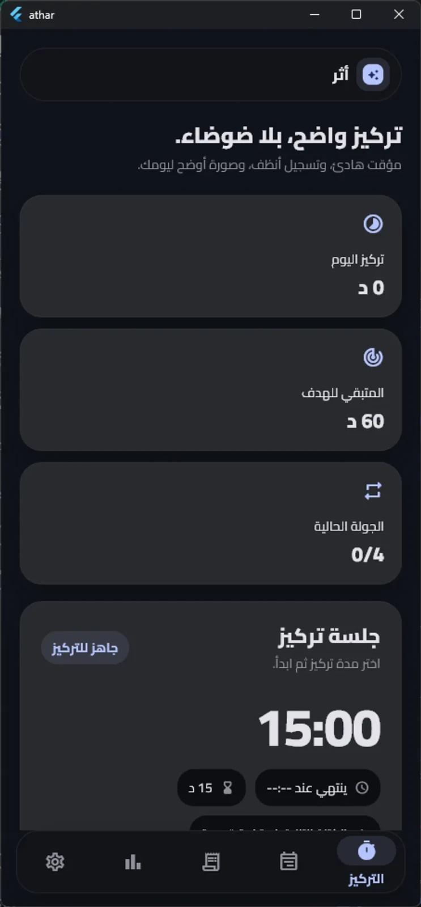
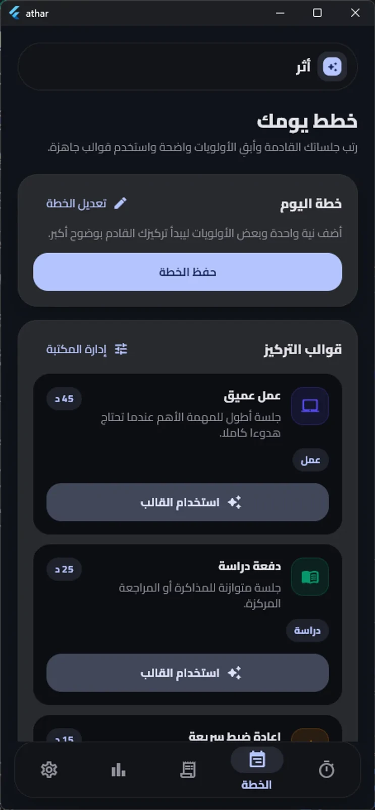
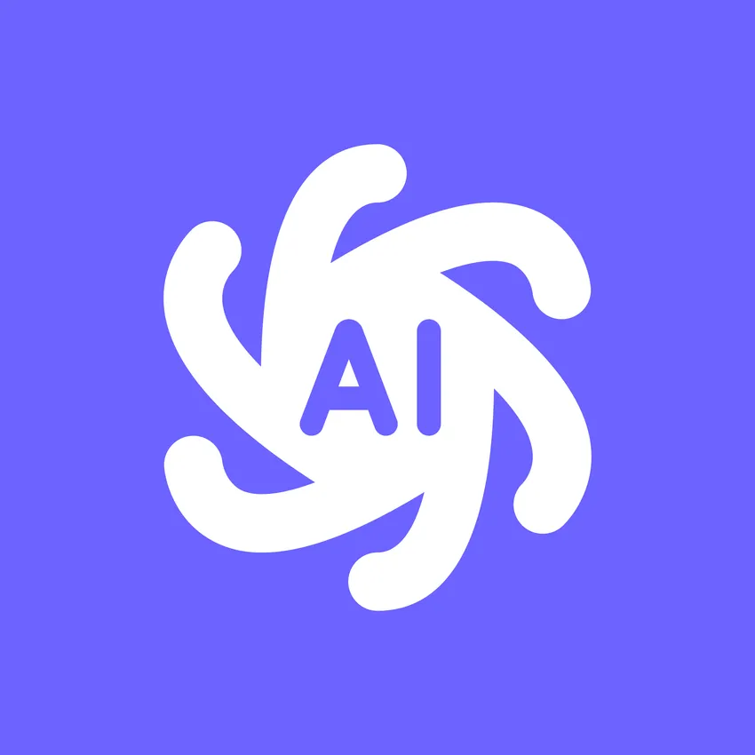
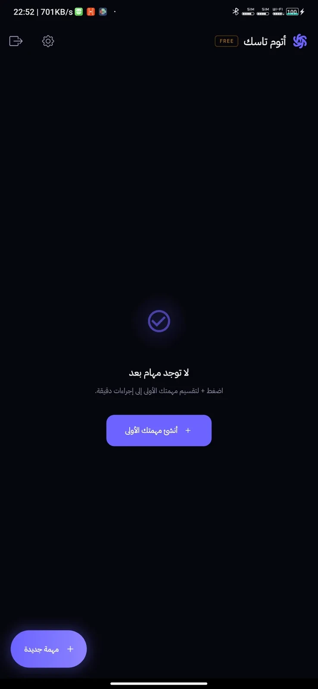
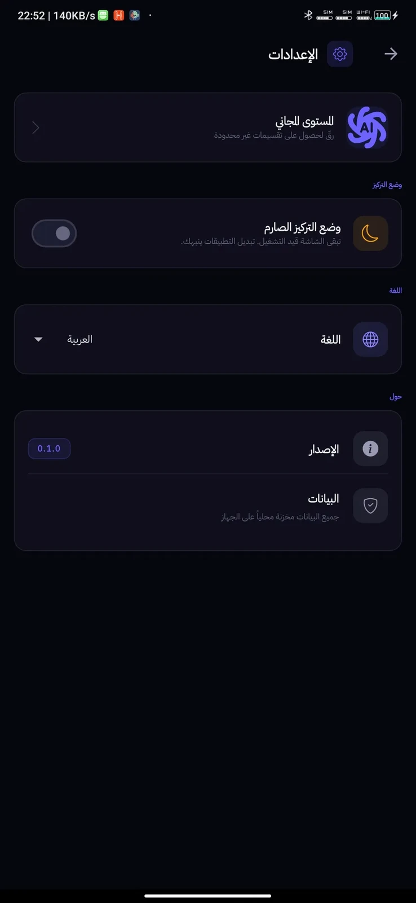
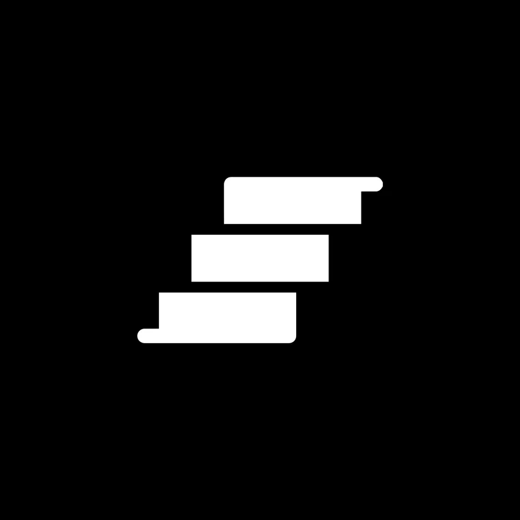
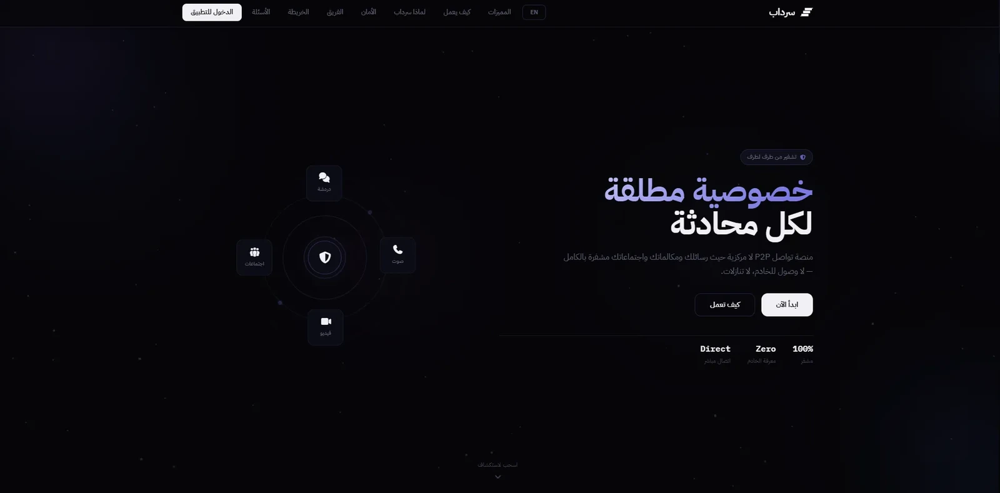
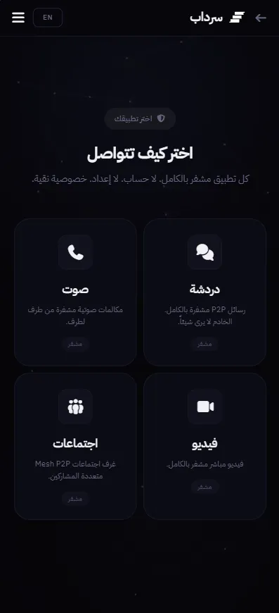
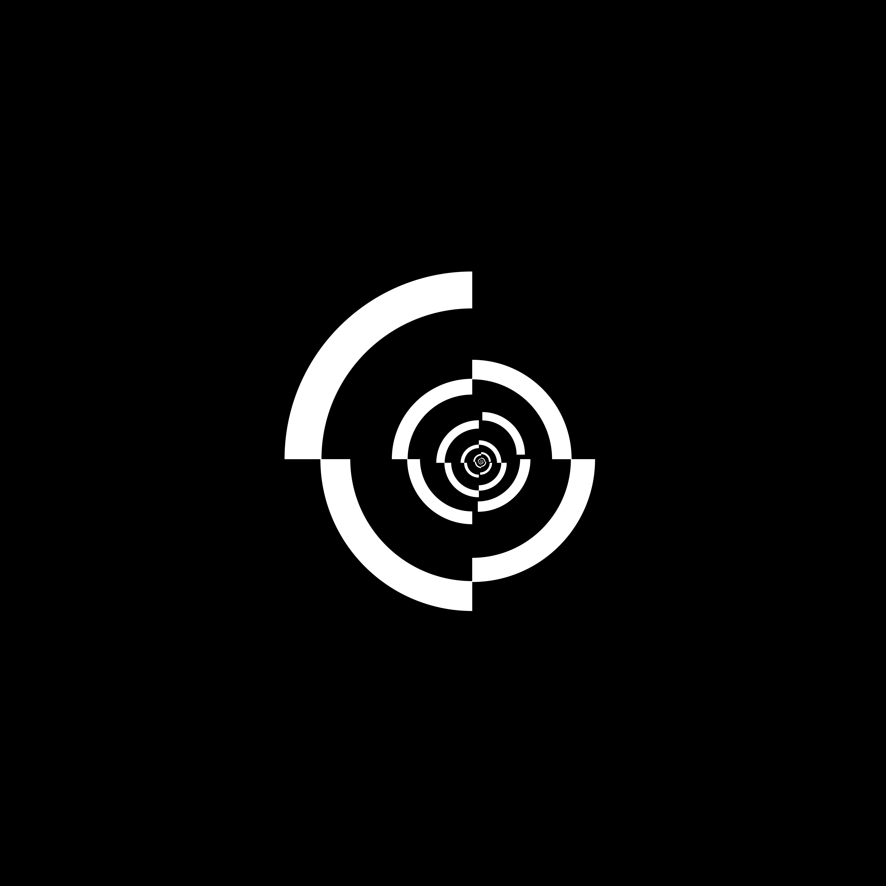

متاح لمشاريع العمل الحر
نصر الدين. براس
مطوّر & مصمّم
مصمّم ومونتير فيديو في OpportuNet® · مؤسس KumoCoders — تصميم وكود وموشن.
- المقر
- الدار البيضاء، المغرب
- التوقيت
- --:--
- الحالة
- ● متاح
أصمّم واجهات هادئة باهتمام صاخب بالتفاصيل.
أعمل حاليًا مصمّمًا ومونتير فيديو في OpportuNet® ومؤسسًا لـKumoCoders، أجمع بين التصميم والتطوير لصناعة تجارب بصرية ورقمية جذابة. يدعم مساري شهادات عملية في GitHub وتأسيس متين في Figma وتطوير الويب.
أتابع دراستي الثانوية في الثانوية التأهيلية الشهيد إدريس لحريزي — التخرج المتوقع يونيو 2027 — وأصقل مهاراتي بالتعاون والتعلم المستمر، مساهمًا في مشاريع تربط الإبداع بالتقنية.
- مؤسس — KumoCoders
- مصمّم ومونتير فيديو — OpportuNet®
- المرتبة الثانية — المسابقة الوطنية في Python
const nacer = {
base: "Casablanca, MA",
role: ["designer", "developer", "video editor"],
stack: ["figma", "html", "css", "js"],
frameworks: 0,
hireable: () => true
};// التقنيات
نظام تشغيل قيد البناء — NaOS · قريبًا
- 2025 — الآنمؤسس، مطوّر ومصمّم — KumoCoders
هجين · الدار البيضاء-سطات. قيادة التصميم والتطوير وإطلاق مشاريع ويب متكاملة.
- 2025 — الآنمصمّم ومونتير فيديو — OpportuNet®
عن بُعد. أنظمة هوية ومرئيات ومونتاج — منها مشروع Project Phi.
- 2026مصمّم — Tython
حضوري · الدار البيضاء. تصميم منتجات بـIllustrator وFigma.
- 2020 — 2025مصمّم غرافيك ومطوّر مستقل
حضوري وعن بُعد. CSS وHTML5 وMySQL — أكثر من 5 سنوات مع عملاء.
- 2024 — 2027الثانوية التأهيلية الشهيد إدريس لحريزي
جذع مشترك · أولى وثانية باكالوريا. المرتبة الثانية — المسابقة الوطنية في البرمجة 2024–2025.
أعمالي
أعمال مختارة، 2023 ← 2026.
// مختارات بصرية









المزيد مفتوح المصدر — @nacer0s ←
شهادات
إثباتات العمل والدراسة.
اعتمادات وشهادات، 2025 ← 2026.
- Career Essentials in GitHub — Professional CertificateGitHub · GitHub, Web Dev2025
- Practical GitHub CopilotLinkedIn · Web Dev, Copilot2025
- Practical GitHub Project Management & CollaborationLinkedIn · GitHub, Collab2025
- Practical GitHub ActionsLinkedIn · GitHub, Web Dev2025
- HTML EssentialsCisco Networking Academy · HTML2025
- Microsoft Azure EssentialsLinkedIn · Azure2026
- شهادة تقديرKumoCoders2025
- شهادة مطوّر ويب متكاملKumoCoders · تطوير الويب—
- Machine LearningOrange · أغسطس 20252025
- هاكاثون GPT-5lablab.ai · 20252025
- هاكاثون N8N الدار البيضاءAI Crafters × n8n · أتمتة2026
موجز + أهداف
الخط والشبكة أولًا
خام بدون حشو
اختبار + نشر